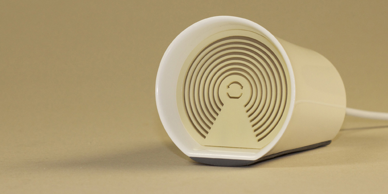

LightSync is a product that aims to maintain a connection between remote team members by using coloured light as an indicator of morale. Each team member keeps a LightSync device in their workplace and is periodically prompted to set the colour by rolling the device left or right, this colour is broadcasted to the other team members’ LightSync devices at the push of a button. This anonymous broadcast promotes communication throughout the whole team when there’s a problem and instils confidence when all is well, whilst also providing a constant reminder that they are not working alone.